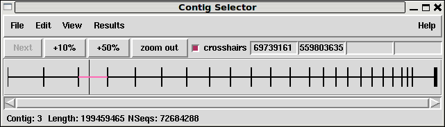

The gap5 Contig Selector is used to display, select and reorder contigs. It can be invoked from the gap5 View menu, but will automatically appear when a database is opened. In the Contig Selector all contigs are shown as colinear horizontal lines separated by short vertical lines. The length of the horizontal lines is proportional to the length of the contigs and their left to right order represents the current ordering of the contigs. This Contig Order is stored in the gap database and users can change it by dragging the lines representing the contigs in the display. The Contig Selector can also be used to select contigs for processing.
Unlike gap4, gap5 does not display annotations within the Contig Selector window.

The figure shows a typical display from the Contig Selector. At the top are the File, View and Results menus. Below that are buttons for zooming and for displaying the crosshair. The four boxes to the right are used to display the X and Y coordinates of the crosshair. The rightmost two display the Y coordinates when the contig selector is transformed into the contig comparator (see section Contig Comparator). The two leftmost boxes display the X coordinates: the leftmost is the position in the contig and the other is the position in the overall consensus. The crosshair is the vertical line spanning the panel below.
This panel shows the lines that represent the contigs and the currently active tags. Those tags shown above the contig lines are on readings and those below are on the consensus. Right clicking on a tag gives a menu containing "information" (to see the tag contents) and "Edit contig at tag" which invokes the contig editor centred on the selected tag.
The information line is showing data for the contig that is currently under the crosshair.